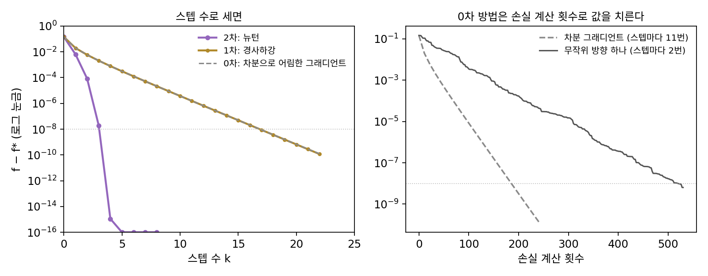

최적화 방법의 차수: 이 책의 지도
0차 근사는 값만, 1차 근사는 그래디언트까지, 2차 근사는 곡률까지 썼고, 높은 차수일수록 같은 허용 오차에서 더 멀리 믿을 수 있었다. 옵티마이저도 스텝마다 한 점에서 무엇을 잴지 골라야 하는데, 더 많이 재면 한 스텝에 더 멀리 갈 수 있지만 재는 데 드는 계산과 메모리가 늘어난다. 같은 문제를 계단마다 다른 방법으로 풀면, 스텝 수와 값은 어떻게 갈릴까?
같은 문제를 세 계단으로 풀기
입력이 10개, 샘플이 500개인 로지스틱 회귀(가중치 감쇠 0.01, 씨앗 고정)를 파라미터 0에서 출발해, 손실이 최솟값보다 10⁻⁸ 이내로 들어올 때까지 풀어 보자. 이 손실은 바닥이 하나뿐이라 네 방법이 같은 곳에 닿는다. 손실 값만 쓰는 0차 방법으로는, 파라미터를 하나씩 10⁻⁶만큼 움직여 손실이 바뀐 양으로 그래디언트를 어림하는 것(차분)과 무작위 방향 하나로만 차분을 재는 것 둘을 시험했다. 1차 방법은 그래디언트로 걷는 경사하강이고, 학습률은 이 문제에서 곡률이 넘지 않는 상한 0.3302의 역수로 정했다. 2차 방법은 뉴턴법이다.
| 계단 | 방법 | 스텝 수 | 한 스텝에 재는 것 | 손실 계산 횟수 |
|---|---|---|---|---|
| 0차 | 차분으로 어림한 그래디언트로 경사하강 | 17 | 손실 값 11번 | 187 |
| 0차 | 무작위 방향 하나의 차분으로 걷기 | 260 | 손실 값 2번 | 520 |
| 1차 | 경사하강 | 17 | 그래디언트(숫자 10개) | 해당 없음 |
| 2차 | 뉴턴법 | 4 | 그래디언트와 헤시안(숫자 100개) | 해당 없음 |
차분으로 어림한 그래디언트는 참 그래디언트와 거의 같아서 경사하강과 똑같이 17스텝이 걸렸지만, 스텝마다 손실을 d + 1 = 11번 계산했다. 무작위 방향 하나만 쓰면 스텝마다 손실을 두 번만 계산하지만 스텝이 260번 필요하다. 뉴턴법은 4스텝이면 끝나지만 스텝마다 헤시안 100개를 구하고 연립방정식을 푼다.
한 스텝에 근사의 몇째 계단까지 재서 쓰느냐로 최적화 방법을 나눈 것을 최적화 방법의 차수 (몇째 계단까지 재나 / order of an optimization method)라 한다. 값만 쓰면 0차 방법, 그래디언트를 쓰면 1차 방법, 헤시안을 쓰면 2차 방법이고, 이 책은 이 계단을 따라 나아간다.
| 계단 | 한 점에서 재는 것 | 이 책에서 만날 방법 |
|---|---|---|
| 0차 | 손실 값 | 유한 차분, 무작위 탐색, 진화 전략과 CMA-ES |
| 1차 | 그래디언트(역전파로 구함) | 경사하강, 확률적 경사하강 |
| 2차 | 헤시안 | 뉴턴법 |
| 2차의 근사 | 지난 그래디언트들로 곡률을 흉내 냄 | 모멘텀, Adam, 준뉴턴법(BFGS), K-FAC와 Shampoo, Muon |
계단을 오를수록 스텝 수는 줄지만 한 스텝의 값이 오른다. 파라미터 d개짜리 모델에서 한 점에서 재는 숫자는 값 1개, 그래디언트 d개, 헤시안 d²개다. float32(숫자 하나에 4바이트)로 담으면 다음과 같다.
| 파라미터 수 d | 그래디언트 | 헤시안 |
|---|---|---|
| 2,600 | 10 KB | 성분 676만 개, 27 MB |
| 100만 | 4 MB | 4 TB |
| 1억 | 400 MB | 40 PB(4만 TB) |

ML에서: 큰 신경망은 왜 1차에 머물고, 그 너머에는 무엇이 있나
큰 신경망이 왜 거의 모두 1차 방법을 쓰는지는 위 메모리 표의 그래디언트 칸과 헤시안 칸을 견주면 보인다. 역전파는 파라미터가 몇 개든 순전파 몇 번 값으로 그래디언트 전체를 구해 주지만, 헤시안은 파라미터 1억 개에서 40 PB라 담을 수조차 없다. 2차 근사가 더 멀리 내다본다는 이점을 포기하고, 1차 근사를 믿을 수 있는 짧은 스텝을 많이 밟는 방법을 고른 것이다.
그렇다고 1차에 그냥 머물지는 않는다. 디데릭 킹마(Diederik Kingma)와 지미 바(Jimmy Ba)가 2014년에 낸 Adam은 파라미터마다 그래디언트의 이동 평균과 그래디언트 제곱의 이동 평균을 들고 다니며 스텝 크기를 파라미터마다 다르게 정한다. 숫자 d²개짜리 헤시안 대신 숫자 d개로 곡률을 흉내 내는 셈이고, 이 책은 이런 방법들을 2차의 근사라는 계단에 둔다. 반대 방향으로 내려가는 시도도 있다. 사디카 말라디(Sadhika Malladi)와 동료들은 2023년 「순전파만으로 언어 모델을 파인튜닝하기」에서 0차 방법으로 큰 언어 모델을 파인튜닝해, 역전파를 쓸 때보다 훨씬 적은 메모리로 학습할 수 있다고 보고했다. 같은 80 GB 그래픽 처리 장치 하나에서 역전파로는 파라미터 27억 개짜리 모델이 한계였지만 이 방법으로는 300억 개짜리 모델을 학습했다는 것이다. 어느 계단을 쓸지는 정확도만이 아니라 메모리와 계산을 함께 따져 고른다.
문제 13. 자전거 기어 고르기
21단 기어 자전거로 오르막을 오른다. 편한 정도는 어느 한 단에서 가장 크고, 그 단에서 멀어질수록 줄어든다고 하자. (가) 한 단씩 다 타 보고 고르면 최악의 경우 몇 번 타야 하는가? (나) 한 번 타 볼 때마다 「지금보다 가벼운 쪽이 낫다」인지 「이 단이거나 더 무거운 쪽이 낫다」인지만 알 수 있다면, 최악의 경우 몇 번이면 되는가? (다) 4단, 5단, 6단을 타 보고 편한 정도를 각각 −81, −64, −49로 재었다. 편한 정도가 단에 대한 포물선이라고 보면 몇 단을 고르겠는가?

(가)는 21번이요. (나)는 들은 대로 반씩 줄이면 되니까 21 → 11 → 6 → 3 → 2 → 1로 다섯 번이면 돼요. 정답 단이 어디냐에 따라 네 번이나 다섯 번, 평균 4.48번이에요.

(다)는 6단과 4단의 차이를 2로 나눈 (−49 + 81)/2 = 16이 그래디언트고, −49 − 2 × (−64) − 81 = −2가 곡률이야. 꼭짓점은 5 − 16/(−2) = 13단.

세 방법이 쓴 정보를 계단으로 말하면요?
(가)는 편한 정도라는 값만 썼으니 0차, (나)는 어느 쪽이 나은지, 그래디언트의 부호를 썼으니 1차…
(다)는 그래디언트와 곡률이니까 2차고.

응. 계단을 하나 오를 때마다 21번, 5번, 한 번에 13단으로 줄어.

그런데 (다)도 결국 세 단을 타 봤잖아요. 값만 세 번 재서 그래디언트와 곡률을 만든 거니까 0차로 2차를 흉내 낸 거네요.

좋은 데를 봤어요. 그리고 편한 정도가 정말 포물선이 아니면 13단이 정답이라는 보장은 없어요. 그래도 다음에 어디를 타 볼지는 크게 좁혀 주죠.

시험 범위를 처음부터 다 훑어보는 친구, 모르는 문제가 앞쪽인지 뒤쪽인지 물어 가며 좁히는 친구, 지난 시험 두세 번의 경향으로 바로 짚는 친구가 있는데, 각각 0차, 1차, 2차였네요.
문제 14. 차분으로 그래디언트를 재면 생기는 두 가지 오차
0차 방법은 그래디언트를 차분으로 어림한다. f(x) = ln(1 + x)의 x = 0.5에서 참 그래디언트는 1/1.5 = 0.666667이다. (가) 앞쪽 차분 (f(x + h) − f(x))/h와 가운데 차분 (f(x + h) − f(x − h))/(2h)를 h = 0.01에서 계산하고, 오차가 각각 h와 h² 중 무엇에 비례하는지 테일러 전개로 설명하라. (나) float64로 계산할 때 h를 10⁻⁸, 10⁻¹²로 더 줄이면 앞쪽 차분의 오차는 어떻게 되는가? (다) 파라미터가 d개이면 앞쪽 차분으로 그래디언트 하나를 어림하는 데 손실을 몇 번 계산해야 하는가?
h = 0.01이면 앞쪽 차분이 0.664454로 −2.21 × 10⁻³ 틀리고, 가운데 차분은 0.666677로 9.88 × 10⁻⁶ 틀려요. h를 줄일수록 좋아지니까 h는 작을수록 좋겠죠.
(가)를 전개로 보면 f(x + h) = f(x) + f′h + ½f″h² + …이니까 앞쪽 차분은 f′ + ½f″h + …라서 오차가 h에 비례해.
가운데 차분은?
f(x + h)에서 f(x − h)를 빼면 h² 항이 지워지고 3차 항이 남아서 오차가 (3차 미분) × h²/6, h²에 비례하고.
(나)를 계산해 볼까요?

h = 10⁻⁸에서 오차 −5.9 × 10⁻⁹로 좋아졌는데, h = 10⁻¹²에서는 +7.78 × 10⁻⁵예요. 10⁻⁴에서보다 나빠졌어요. h를 줄였는데 왜 나빠지죠?

문제 3(float32로 계산한 ln(1 + x))처럼 거의 같은 두 수를 다루다 반올림으로 정보를 잃는 거 아닐까? h가 그렇게 작으면 f(x + h)와 f(x)가 거의 같은 수잖아.
그 둘을 빼면 남는 반올림 오차는 어느 정도죠?
float64의 상대 간격 2.2 × 10⁻¹⁶에 f 값 0.4를 곱한 정도요. 그걸 h로 나누니까 h가 작을수록 커지네요. 2.2 × 10⁻¹⁶ × 0.4 / 10⁻¹²이면 10⁻⁴ 단위예요.
테일러 나머지는 h를 줄이라고 하고, 반올림은 h를 키우라고 해요. 그래서 앞쪽 차분에는 가장 좋은 h가 있죠. 표에서 보면 어디쯤이에요?
10⁻⁸ 근처요. 두 오차가 비슷해지는 곳이에요.
(다)는요?

파라미터마다 한 번씩 움직여야 하니까 d + 1번이에요. 가운데 차분이면 2d번이고요. 파라미터가 1억 개면 그래디언트 하나에 손실을 1억 번 계산해야 해요.

역전파가 순전파 몇 번 값으로 그래디언트 전체를 주는 게 얼마나 대단한 건지 이제 알겠어요. 체중계로 0.1 g짜리 편지 무게를 재려고 편지를 들고 올라섰다 내렸다 하는 것과 같네요. 차이가 너무 작으면 저울의 눈금에 묻혀요.
문제 15. 헤시안을 담을 메모리
파라미터 1억 개짜리 모델을 float32(숫자 하나에 4바이트)로 학습한다. (가) 파라미터, 그래디언트, 헤시안을 담는 데 각각 메모리가 얼마나 드는가? (나) Adam은 파라미터마다 그래디언트의 이동 평균 m과 그래디언트 제곱의 이동 평균 v를 하나씩 들고 다닌다. 이 두 상태에 드는 메모리는? (다) 헤시안의 대각만 담으면 얼마인가? 대각만 담으면 무엇을 놓치는가?
(가)는 파라미터 0.4 GB, 그래디언트 0.4 GB, 헤시안은 10¹⁶개라서 4 × 10¹⁶바이트, 40 PB예요. 그래픽 처리 장치 하나가 80 GB니까 50만 개가 필요하네요. 그럼 헤시안을 한 줄씩 구해서 쓰고 버리면 되잖아요.
한 줄씩 구하는 데는 얼마가 들까요? 헤시안 한 줄은 헤시안에 한 방향 벡터를 곱한 것과 같아요.
헤시안과 벡터의 곱 하나는 그래디언트 계산 몇 번 값으로 얻을 수 있다고 알려져 있어요(펄머터, 1994). 그래도 줄이 1억 개니까 한 스텝에 그래디언트 계산을 억 번 넘게 해야 해요.
(나)는 m과 v를 합쳐 0.8 GB예요. 파라미터의 두 배요. Adam을 쓰면 메모리가 많이 든다는 게 이거였네요. (다)는 대각만이면 0.4 GB라 담을 수 있고요.

대각만 담으면 무엇을 놓칠까요? 가지치기에서 대각만 쓴 공식이 어디서 실제와 어긋났는지 떠올려 보세요.
두 파라미터를 함께 움직일 때 생기는 곡률이요. 대각 밖의 성분이요.

가지치기 문제에서 대각만 쓴 어림 0.114가 실제 0.144랑 달랐던 게 그거야?
얼마간은. Adam의 v도 파라미터마다 따로 재니까, 파라미터끼리 얽힌 곡률은 못 봐. 그걸 조금 더 담으려는 게 K-FAC나 Shampoo 같은 방법이겠다.
학과 사람 전원의 친분 관계를 다 적으려면 사람 수의 제곱만큼 칸이 필요한데, 각자 「친구가 몇 명인지」만 적으면 사람 수만큼이면 되죠. 대신 누구와 누가 친한지는 모르고요.